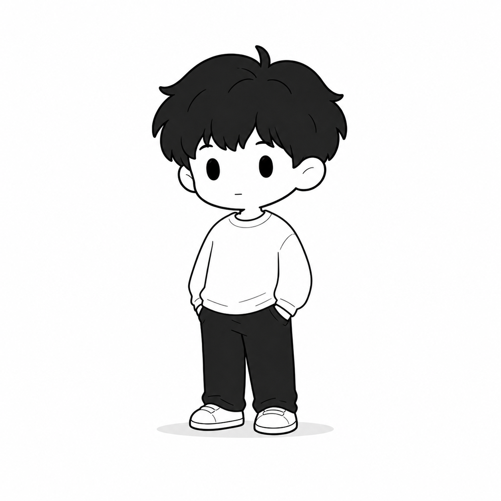

研究 AI 时代的学习关系
教师判断、反馈、关怀、协作学习和技术支持。
最终页面模式覆盖 Home、Article Detail 和 Tool / Resource：同一套 Ze 语言会根据内容密度和任务目标调整结构。

首页先保留身份与近况，再把 Academic 和 Practice 做成等重入口。
2026 年 7 月，将作为 Captain 参加由深圳明湾学校举办的微光黑客松。
教师判断、反馈、关怀、协作学习和技术支持。
课程、工具、资源和产品现场的实践记录。
符号可用于 cursor、focus、hover、loading 和 section marker，但不替代身份、研究、实践和近况。
Dot / Circle / Square / Triangle / Infinity: focus, question, structure, growth, continuity.
Ze、Dot 和抽象符号可以支持交互与视觉记忆点；首页仍由身份、研究、实践和近况组织。
适合长文：阅读栏为主，右侧 rail 很轻，figure 作为一个概念锚点出现。
梳理 UNESCO《教师人工智能能力框架》、教育部《应用指引》和《2026 中国教师 GAI 应用报告》的核心内容与共同立场。
教育领域正在从“师生关系”转向“教师—AI—学生”的三元关系。这种转变不是修辞，而是教学现场正在发生的结构变化。

文章页先根据正文内容判断，不预设必须出现多少卡片、quotation 或动效；设计系统只提供可插入的组件语言。
示例：当正文真的包含框架、路径、边界或关键引用时，才把这些位置转化为视觉组件。
正文提出清晰框架、分类或对比时，才使用 callout / card。
正文有真实顺序、因果或方法步骤时，才加入 path / step flow。
正文出现关键判断、原文引用或边界声明时，才使用 quote。
工具/资源页面比首页更紧凑、更功能化，使用 filters、tabs、列表和结果状态。
A reusable tool surface should be denser, calmer, and more task-focused than a homepage.
Structured enough for repeated use, quiet enough for daily work.
Use color for status and grouping, not decorative excitement.